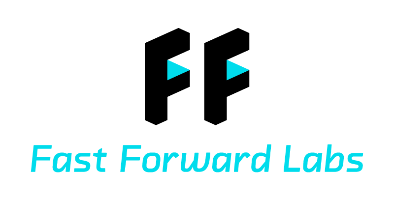
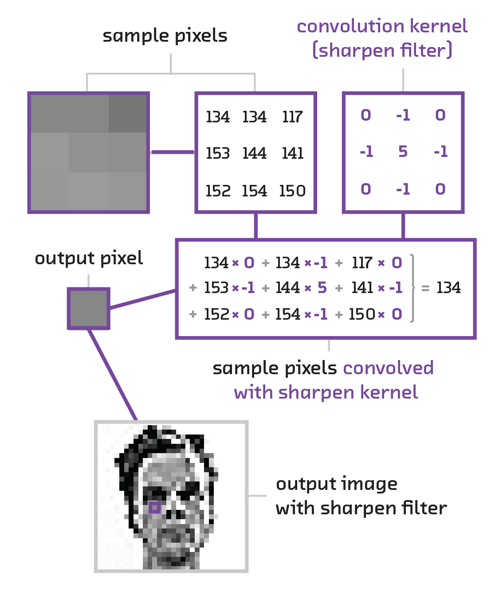
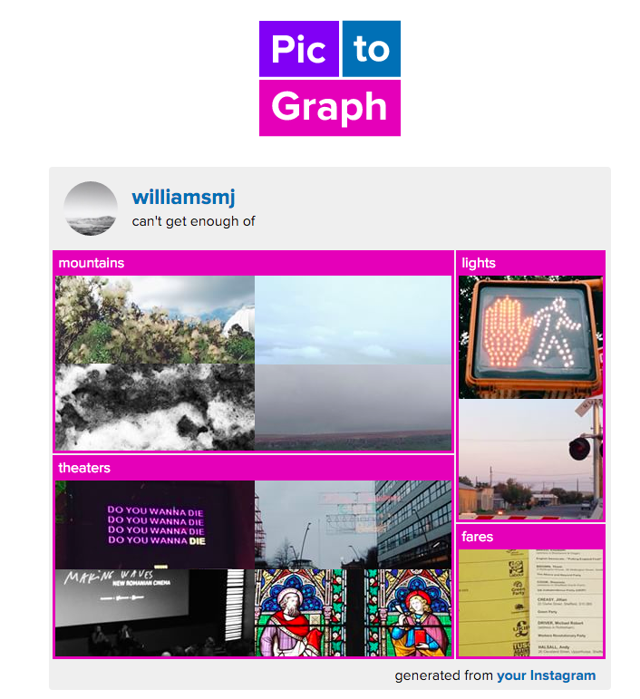

class: center, middle  ## Mike Williams and Hilary Mason [mike.place/talks/insight](http://mike.place/talks/insight/) --- # Advice about advice - Data science is a young discipline, so - people who've being doing it for long enough to be experienced are unusual in many ways - the people with CVs more like yours don't have much experience -- - What kind of 'data scientist' are you talking to? -- - A business analytics person - A data engineering person - A software engineer who taught themself statistics - A science PhD who taught themself to code - A quasi-academic with a PhD in machine learning who got hired at NIPS --- # Me Academia - Undergrad physics 🇬🇧 - PhD astrophysics 🇬🇧 - 2 years at postdoc 1 🇩🇪 - 1 year at postdoc 2 🇺🇸 -- Left academia summer 2014 🎉 -- Not academia - 1 year at Brandwatch as a 'Data Scientist' - At Fast Forward Labs as a 'Research Engineer' since October 2015 --- # Getting a job - Angel List - Salaries - The O'Reilly Data Science Salary Survey - [h1bdata.info](http://h1bdata.info/) and friends --- # Interviews - Screening questions - [what's a generator](http://nedbatchelder.com/text/iter.html)? - what are the ways of searching a graph? - 'Explain something complicated' - White boards - [10001st prime](https://projecteuler.net/problem=7) - [Lots of unix](http://aadrake.com/command-line-tools-can-be-235x-faster-than-your-hadoop-cluster.html) - Outline an interpolation algorithm - Code up regression model for citibike usage - Take-home: 311 data - Take-home: recommendation engine for github --- # Choosing a job [Advice from Stitchfix](http://multithreaded.stitchfix.com/blog/2015/03/31/advice-for-data-scientists/) > A Data Scientist should look for a company that actually uses data science to > set themselves apart from the competition. When this happens, the company > becomes supportive to data science instead of the other way around. It's > willing to invest in acquiring the top talent, building the necessary > infrastructure, pioneering the latest algorithmic and computational techniques, > and building incredible engineering products to manifest the data science. -- > **"Good enough" is not a phrase that is uttered in the context of a strategic > differentiator**. --- # Comparison to academia - The visa situation is much tougher - Self promotion is still important. Don't stop giving talks! - Changing jobs is easier and more common -- - Your career options increase, and not everything has an application form. This is exciting and overwhelming. You'll get the hang of it. -- > [Harvard grads] are vulnerable to Wall Street investment firms and to > things like Teach for America because they have application processes at all. > But life, normal adult life, doesn’t have an application process. > > — [Cathy O'Neill](http://mathbabe.org/2012/02/17/how-harvard-is-failing-its-students/) --- # Brandwatch <img src="brandwatch.png" style="width:100%"> --- # Fast Forward Labs - Each quarter we profile a new development in computer science, statistics or machine learning - We build a prototype and write a report <img src="ff01-cover.png" style="width:31%"> <img src="ff02-cover.png" style="width:31%"> <img src="ff03-cover.png" style="width:31%"> --- # Neural networks - Logistic regression learns a mapping from features X1..XN to a classification y - Can only learn linear relationships, unless you add cross terms X1 X2, etc. - Feed-forward neural networks learn the cross terms that are useful .center[<img src="example_network.svg" style="width:40%">] --- class: split-30 # Hello world in `keras` .column[ <img src="example_network.svg" style="width:100%"> ] .column[ ```python from keras.models import Sequential from keras.layers.core import Dense, Activation from keras.optimizers import SGD model = Sequential() model.add(Dense(input_dim=3, output_dim=4)) model.add(Activation("tanh")) model.add(Dense(output_dim=2)) model.add(Activation("softmax")) model.compile(loss='categorical_crossentropy', optimizer='sgd') model.fit(X_train, Y_train, nb_epoch=5, batch_size=32) ``` ] --- class: center, middle <img src="imagevector-01-01.png" style="width:70%"> --- class: center, middle  --- class: center, middle <img src="activationmap.jpeg" align="middle" width="100%"> --- class: center, middle  --- # Recurrent neural networks - Feed forward neural networks (including convolutional neural networks) cannot - take variable length sequences as input - remember - These are show-stoppers for most language tasks - Recurrent neural networks solve this <img src="RNN-unrolled.png" width="100%"> --- class: split-30 # Not as scary as they seem! .column[ ] .column[ - Difficult to intuit about structure and interpret results, which can be a show stopper - A fast moving subject, which means you still have to keep an eye on arXiv 😞 - Computationally expensive (sometimes) - Powerful, which can be the difference between accomplishing a task and not - Robust, flexible and composable ] --- # References: neural networks Introduction - Fast Forward reports #3 and #4 - 'Deep Learning' by LeCun et al. [go.nature.com/7cjbaa](go.nature.com/7cjbaa) Maths and optimization - The relevant lectures from Andrew Ng's Coursera course - Chapters 1-3 of Michael Nielsen's textbook, [neuralnetworksanddeeplearning.com](http://neuralnetworksanddeeplearning.com/) Intuition for backprop, convnets and RNNs - Chris Olah's articles, [colah.github.io](http://colah.github.io/) --- # Technical skills you may not have picked up in academia - Algorithms and data structures - Big-Oh notation, i.e. how bad is this `for` loop? - Graphs - NLP and text - Bayesian inferrence/probabilistic programming - Engineering-grade code - AWS - Java and the JVM - So you can talk to your colleagues in engineering - For Scala/spark, etc. - Frontend --- # References - NLP - [*Parameter estimation for text analysis*](http://www.arbylon.net/publications/text-est.pdf) by Gregor Heinrich - [*A Primer on Neural Network Models for Natural Language Processing*](http://u.cs.biu.ac.il/~yogo/nnlp.pdf) by Yoav Goldberg - Algorithms, data structures, and graphs - e.g. Tim Roughgarden's Coursera course - AWS - [Introduction to AWS video](https://www.youtube.com/watch?v=1Eh1uxLyXJ8) - Ethics - Section A of [Big Data's Disparate Impact by Barocas and Selbst](http://papers.ssrn.com/sol3/papers.cfm?abstract_id=2477899) --- # Links - This talk: [mike.place/talks/insight](http://mike.place/talks/insight/) - <mike@fastforwardlabs.com> - [@mikepqr](https://twitter.com/mikepqr)